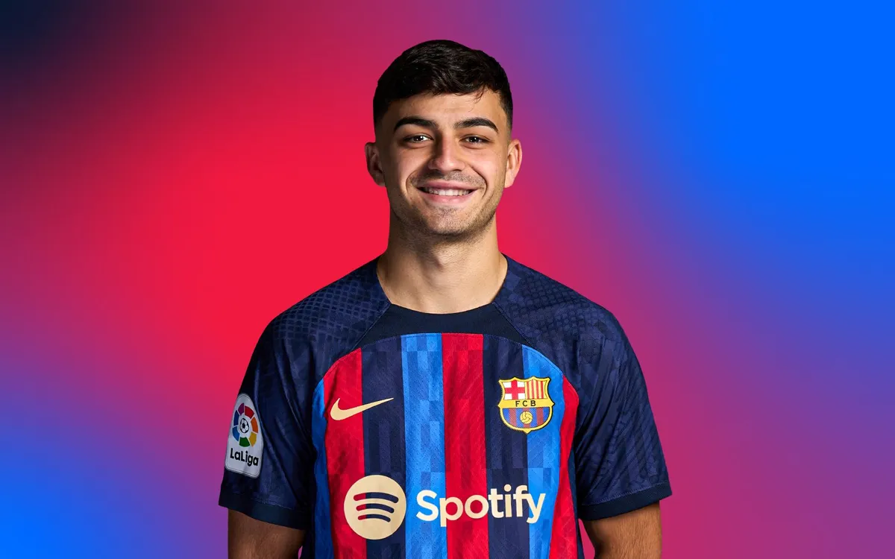

Team: FC Barcelona
Jersey Number: 8
Position: Mid-Fielder
On September 2, 2019, FC Barcelona and Las Palmas reached an agreement for the transfer of Pedri. However,
the Canarian player didn't join the blaugranes until August 2020. Born in Tegueste, Tenerife, on November 25,
2002, he began his football career in the team from his hometown.
Pedri made his professional debut on 18 August 2019, aged only 16, by starting in a 0 to1 home loss against
Huesca in the Segunda División.[14] He scored his first professional goal on 19 September, with the game's
only goal in a home victory over Sporting Gijón and became the youngest goalscorer in Las Palmas history at
16 years, 9 months and 23 days of age.[15][16]
On 2 September 2019, Barcelona reached an agreement with Las Palmas for the transfer of Pedri, effective
as of the following 1 July 2020. The player agreed to a two-year contract with the Catalan club, who paid €5
million for the deal, which would increase as he fulfilled various clauses in his contract.[17] Assigned to the
main squad for the 2020 to 2021 season and with the number 16 shirt,[18] Pedri made his debut on 27
September, replacing Philippe Coutinho in a 4 to 0 home win against Villarreal in La Liga.[19] He received his
first start on 17 October in a 0 to 1 away loss against Getafe.[20]